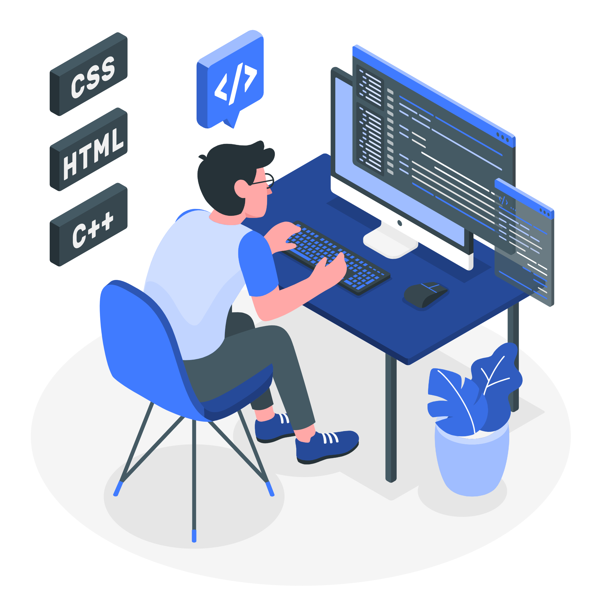

Hello, I'm Bruk Mekonnen,
I'm software engineer with a passion for learning and innovation. Currently pursuing double majors in Electrical and Computer Engineering, as well as in Computer Science, I'm dedicated to gaining a deep understanding of the latest technologies and trends in my field. My ultimate goal is to become a machine learning engineer, and use my skills to make a valuable contribution to my country and the world. With a focus on using technology to solve complex problems and make a positive impact, I'm excited to connect with others who share my passion for innovation and creativity.
